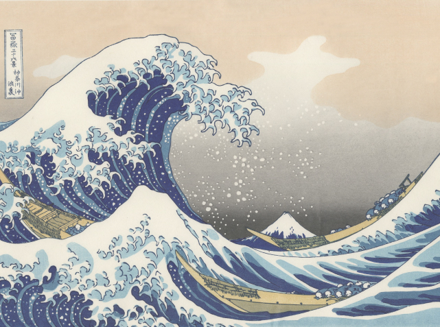
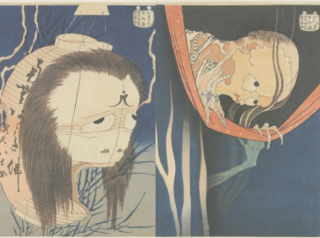
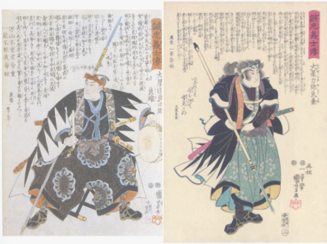
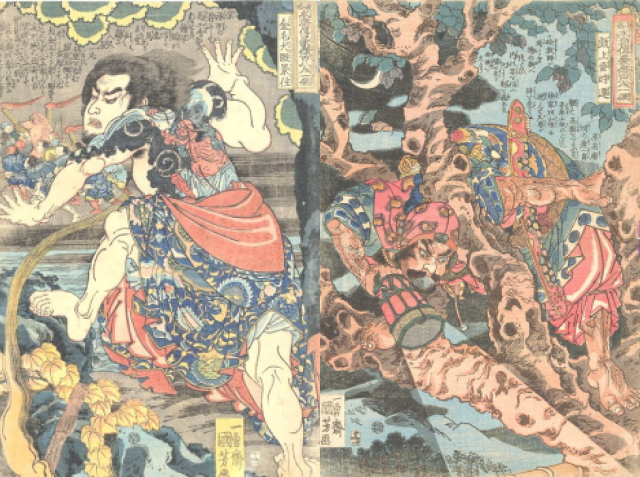
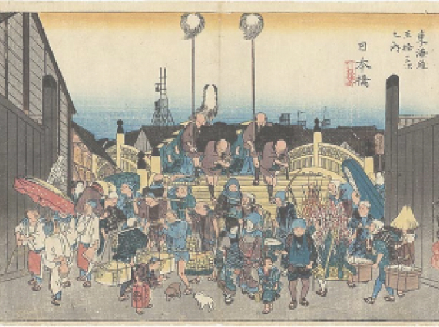
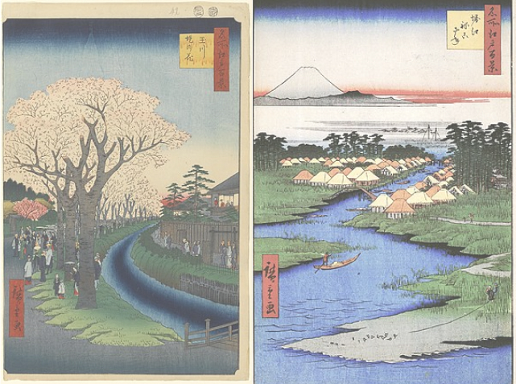

Укиё-э
Художники
Галерея
Для связи
Самые известные серии Кацусики Хокусая(1760-1869)

“36 видов фудзи”

“100 историй о привидениях”
Самые известные серии Утагавы Куниёси(1798-1861)

“47 преданных самураев”

Иллюстрации к известному роману
"Suikuden/Речные заводи”
Самые известные серии Утагавы Хиросигэ(1797-1858)

“53 станции Токайдо”

“100 знаменитых видов Эдо”